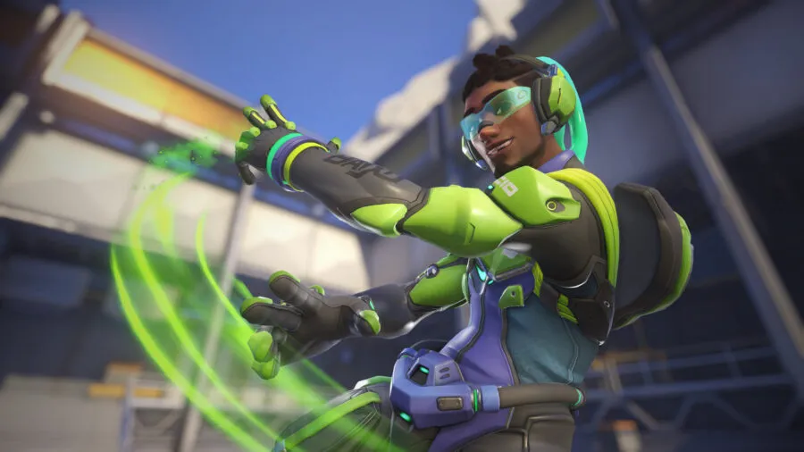

Lúcio Correia dos Santos
Lúcio Correia dos Santos es un personaje del juego fps Overwatch, desarrollado por Blizzard Entertainment.
Es un DJ y activista brasileño que utiliza su música para inspirar y motivar a las personas a luchar por la justicia social. En el juego, Lúcio es un héroe de apoyo que puede curar a sus aliados y aumentar su velocidad de movimiento con sus habilidades musicales.

Habilidades
- Altura máxima: 1.75 m
- Peso: 70 kg
- Rol: Apoyo
- Habilidad principal: Sonic Amplifier
- Habilidad secundaria: Crossfade
- Habilidad táctica: Amp It Up
- Ultimate: Sound Barrier